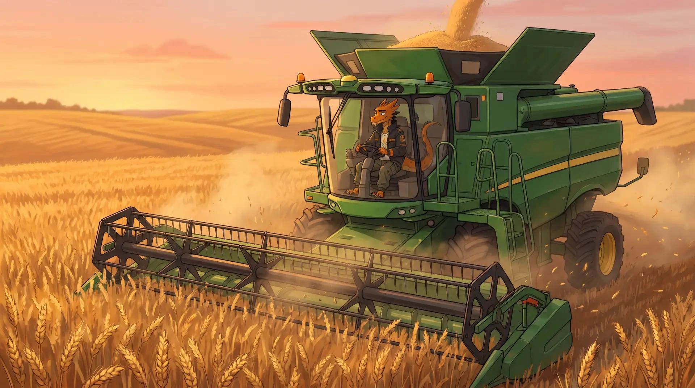
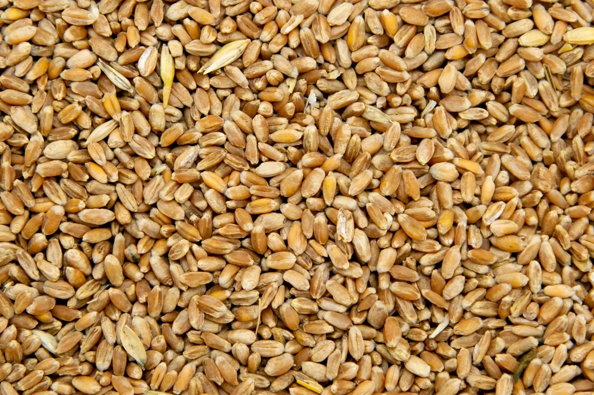
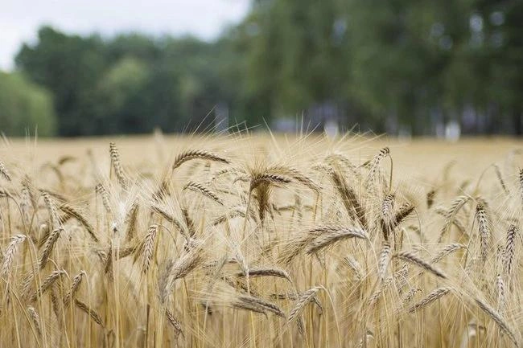

ПШЕНИЦА
Пшеница — одна из ключевых сельскохозяйственных культур и важная основа производства муки, хлеба, макаронных и кондитерских изделий.
Зерно пшеницы используют для производства круп и кормов, а зелёная масса и солома находят применение в животноводстве. Благодаря своей универсальности культура остаётся значимой частью современного сельского хозяйства.
В селекционной программе О.А.З.И.С особое внимание уделяется качеству зерна, устойчивости растений и адаптации сортов к условиям выращивания.

Направления селекции:
- Улучшение качества зерна и муки озимых сортов
- Короткостебельность
- Устойчивость к гербицидам
- Высокое содержание антиоксидантов
- Увеличение стекловидности твердых сортов пшеницы
- Скороспелость
